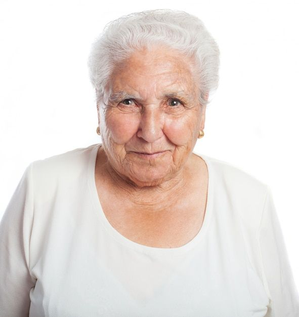
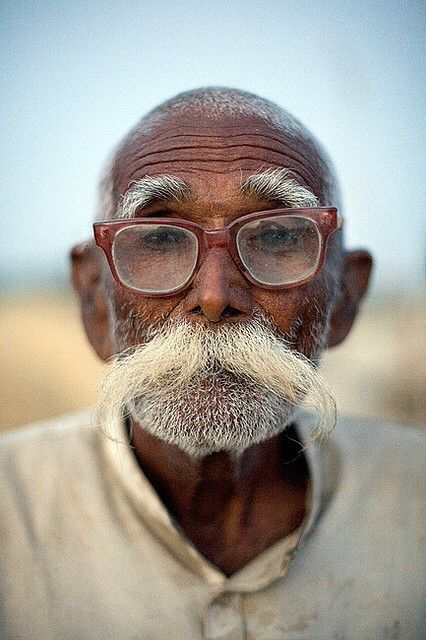
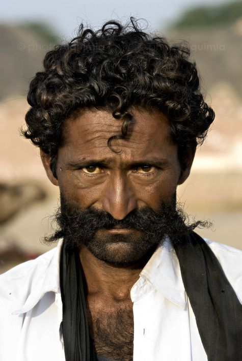

A nossa história começou de forma simples, no coração do bairro, com o desejo de oferecer calçados que acompanhassem a rotina da nossa gente. Tudo iniciou em uma pequena sala comercial, fruto do sonho de criar um espaço onde cada cliente se sentisse em casa. Hoje, continuamos com a mesma essência do primeiro dia: ser a sapataria da família.
Proporcionar conforto, praticidade e bem-estar para o dia a dia das pessoas, oferecendo calçados de qualidade com preço acessível e um atendimento próximo e humano.
Ser a sapataria de referência na região para quem busca calçados práticos e duráveis, sendo lembrada pela confiança, simplicidade e excelente custo-benefício.

Gerente de Loja e Especialista em Atendimento

Consultor de Vendas e Moda Calçadista

Assistente de Estoque e Logística Digital
Rua Sete de Setembro - D, 2720
Chapecó, Santa Catarina
CEP: 89806-152